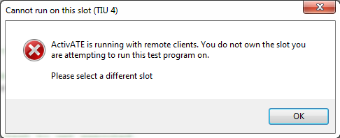

When using remoting, a server and its multiple clients are able to access the same group of slots to run their test programs. They are all also able to control the same shared devices. All the clients and the server must have access to the network drive that contains the desired test program in order to run together.
Running on Server Side Running on Client Side
A server can run tests on any slot in TP manager or the IDE without reserving it, as long as the slot isn't reserved by a client.
In the example below, the TP manager shows that slots 2, 9, and 13 are reserved by a client with IP address '172.16.2.86', and that the server cannot load tests on these slots. However, the server can use any of the other available slots for testing.
A client can only run tests on slots that they have reserved. Otherwise, the following error message is seen.

In the example below, the TP manager shows that slots 3, 5, and 7 are reserved by the server with IP address '172.16.2.78', and that the server cannot load tests on these slots. The test program only runs on slots that are reserved by this client.
Remote Client Setup Server Side Client Side Disconnecting
Astronics Test Systems
Last updated on 1/14/15 M. Buccat